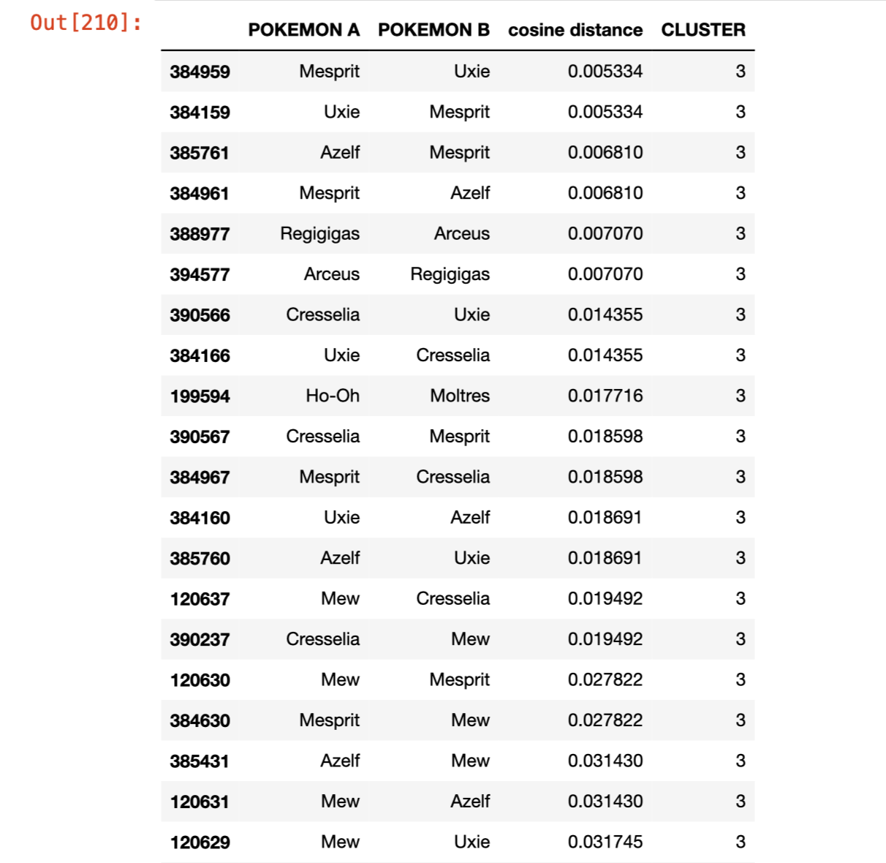

O critério foi adotado após uma analise de dados em um jupyter nootbook
Para essa analise, afim de não consumir muito a API que é gratuita, a pedido deles (fair use) foi utilizado um dataset do kaggle
Para confirmar a analise, foi consultado um mestre pokemón (meu priminho rs) que explicou que alguns pokemons utilizam o special atack enquanto outros o atack, por exemplo o charmander utiliza mais ataques que utilizam o special_atack (flamepower) enquanto o machop se utiliza mais do atack (punch)
Com isso, foi utilizado para a avaliação: (base_exp*2 + atack + special atack * 5 se is_legendary ou is_mythic)
Por fim, seguem alguns pokemons categorizados no kluster 3, e sua distancia com outro pokemon proxímo. De modo geral podemos dizer que quanto mais proximo de um pokemon no Kluster 3, mais poderoso será o pokemon 